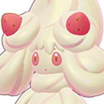

Alcremie
Alcremie é capaz de curar, buffar e dar shield para seus aliados. É um dos melhores healers presentes no jogo. Tente manter seus aliados em aproximadamente 50-75% do seu range pra ser possível prever suas próximas jogadas, principalmente quando se está usando Recover.
Atributos
Habilidades
Habilidade Passiva: Sweet Veil
Impede que aliados próximos sejam colocados para dormir.
Ataque Básico
A cada terceiro ataque, Alcremie lança um projétil que causa dano adicional.
Habilidade Inicial: Decorate
Alcremie decora um aliado, curando-o e aumentando seu Ataque Especial temporariamente.
Habilidade Secundária: Dazzling Gleam
Emite um flash de luz que causa dano aos inimigos na área.
Habilidade Secundária: Tri Attack
Dispara três projéteis elementais que causam dano e podem aplicar efeitos diferentes.
Unite Move: Berry Sweet
Alcremie cura aliados em uma grande área e concede escudo temporário.
Build Recomendada
Rescue Hood
Aumenta a cura e escudos concedidos aos aliados.
Wise Glasses
Aumenta o Ataque Especial.
Sp. Atk. Specs
Aumenta o Ataque Especial ao marcar gols.
Estratégia e Dicas
Início de Jogo
Fique na rota inferior (bottom) com seu parceiro de dupla. Use Decorate para curar e fortalecer seu aliado durante as trocas. Foque em farmar experiência para evoluir rapidamente.
Meio de Jogo
Continue apoiando sua equipe com curas e buffs. Posicione-se atrás dos tanques e cause dano com Dazzling Gleam ou Tri Attack quando seguro.
Fim de Jogo
Em lutas de equipe, fique próximo aos carries e use seu Unite Move (Berry Sweet) no momento certo para virar a luta. Priorize manter seus aliados vivos com curas constantes.